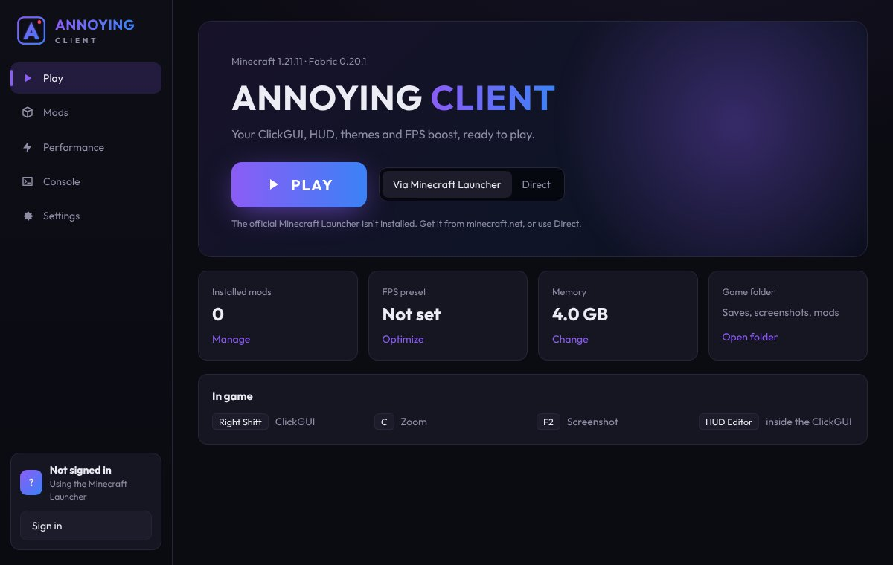
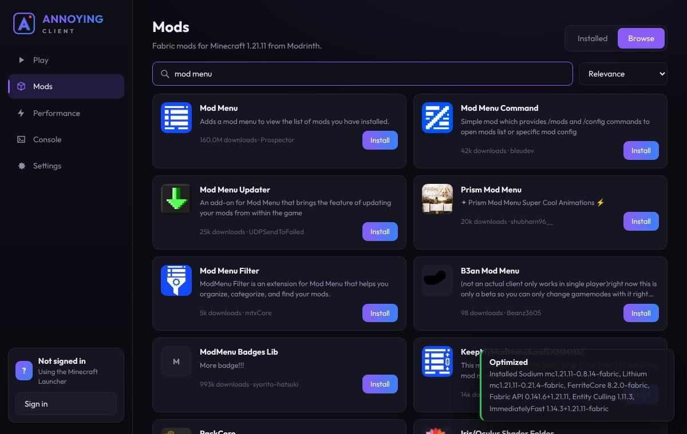
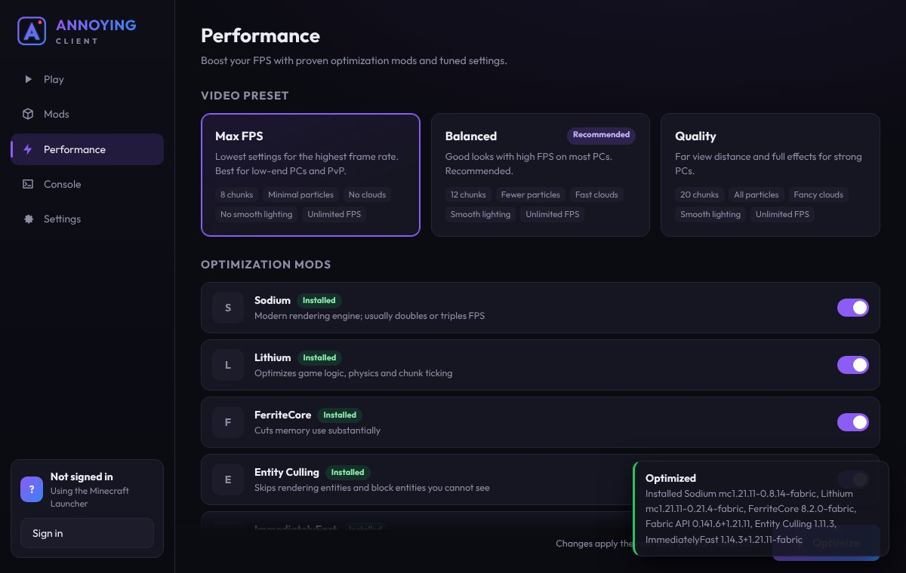
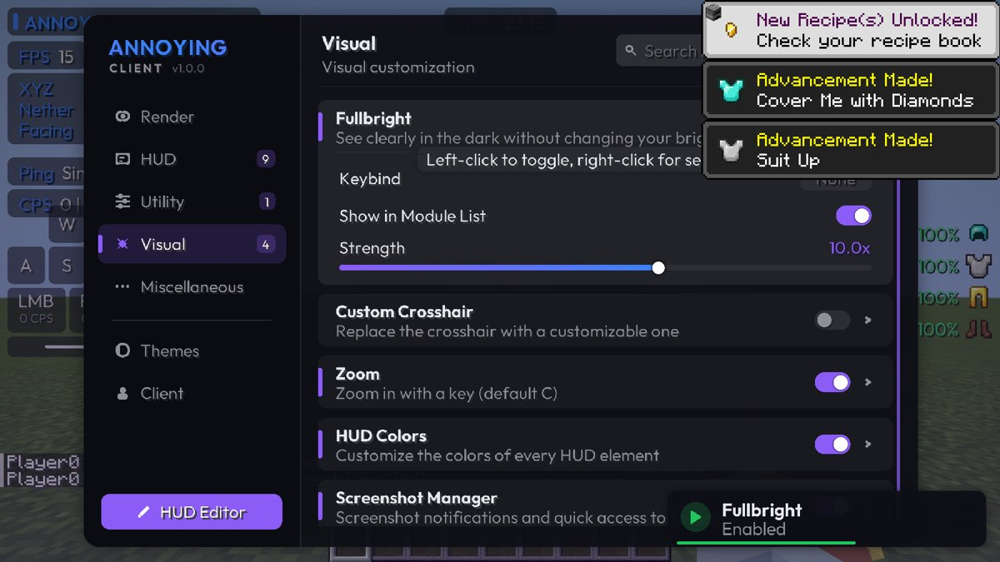
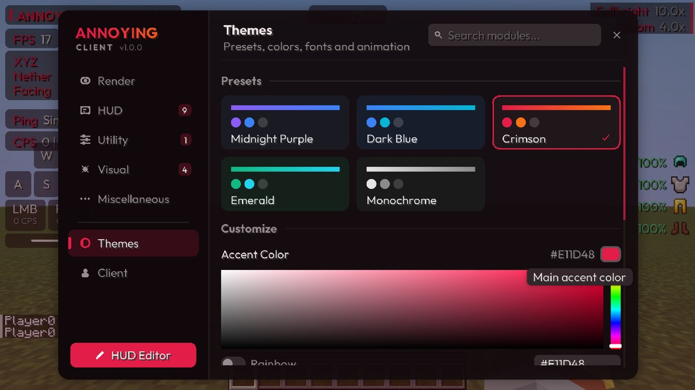
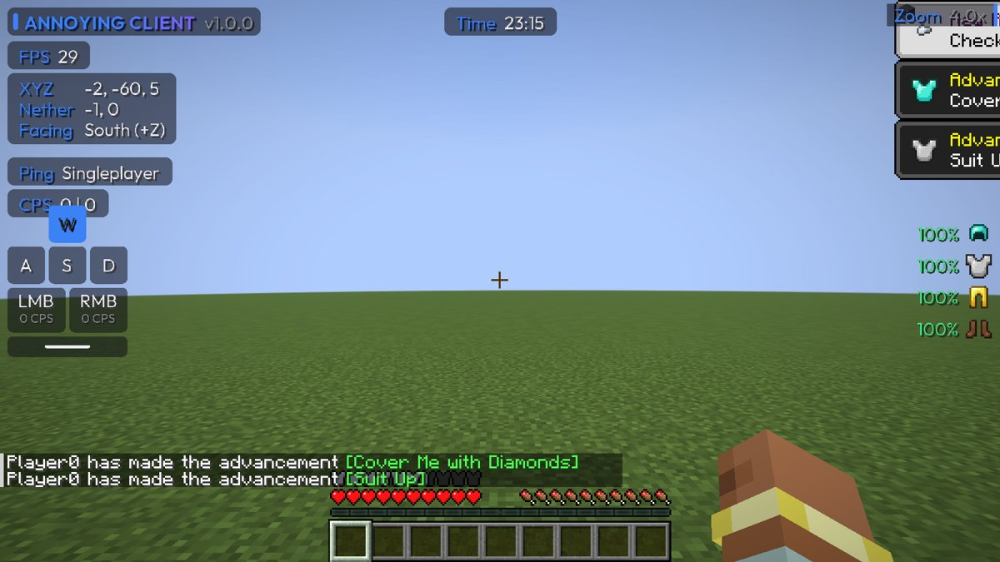
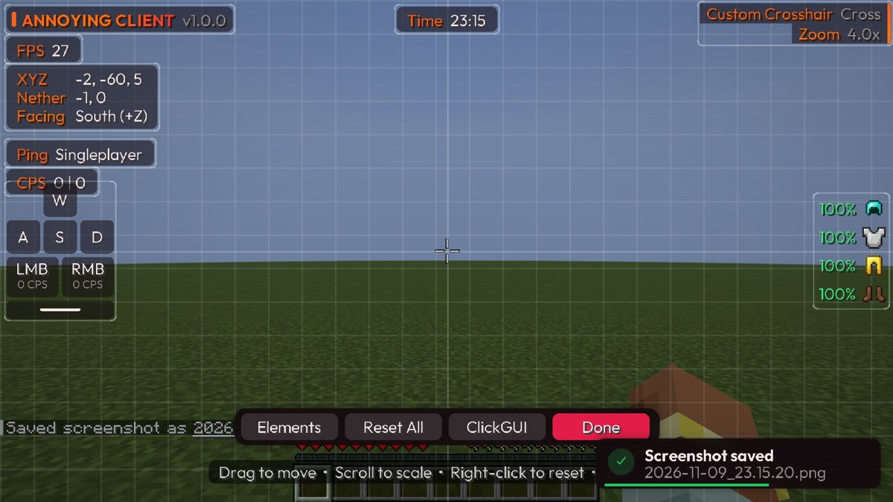
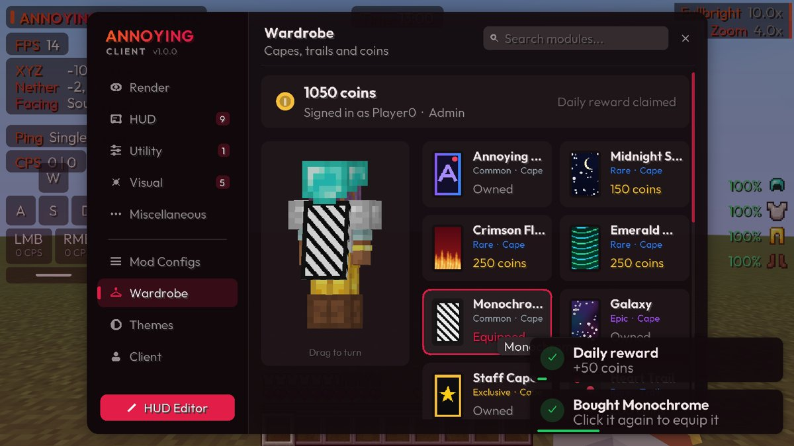

ANNOYING CLIENT
A Minecraft launcher and client in one. Press Play to install the game, a ClickGUI and HUD you can customize, and the best FPS mods, all set up for you.
c0324883eaa37602d759979075fed19341c2535b556d4c3080af5c8bb71a3abe
Launcher, client and FPS boost
Everything is visual or quality-of-life. No cheats, no exploits and no automation, so it is fair to use on servers that allow client mods.
A launcher that sets everything up
The first Play downloads and checks Minecraft, Fabric, Java 21 and the client. After that, the game starts in seconds.
- Play through the official Minecraft Launcher with your own Microsoft account
- Browse and install Fabric mods from Modrinth, with dependencies handled for you
- Turn mods on and off, update them all at once, and watch the live game console

Higher FPS in one click
Choose Max FPS, Balanced or Quality video settings, and install the performance mods most players rely on.
- Sodium, Lithium, FerriteCore, Entity Culling and ImmediatelyFast
- A memory slider that recommends the right amount for your PC
- Tuned Java garbage collection to cut lag spikes

Your ClickGUI and HUD in game
A full in-game menu with five themes, a color picker and profiles, plus nine HUD elements you can drag anywhere.
- FPS, coordinates, keystrokes, armor, CPS, ping, clock, watermark and module list
- Zoom, Fullbright, a custom crosshair, screenshot manager and more
- Settings save automatically and survive restarts




Profiles, mod configs and a wardrobe
New in 1.1.0. Keep separate setups side by side, tune every mod from one menu, and show off capes and trails.
- "1.21.11 optimized" profile: 50 hand-picked mods (Sodium, Iris, Xaero's World Map, Simple Voice Chat and more) installed in one click
- Mod Configs tab: open any mod's settings or edit its config file right inside the ClickGUI
- Wardrobe: capes and particle trails, coins with a daily reward, visible to other Annoying Client players

Up and running in three steps
Download and extract
Download the zip above, right-click it and choose Extract All.
Run AnnoyingClient.exe
If Windows shows "Windows protected your PC", click More info, then Run anyway.
Press Play
The official Minecraft Launcher opens with the Annoying Client profile. In game, press Right Shift.
FAQ
Why does Windows warn me about the file?
The launcher is not code-signed yet, so SmartScreen does not recognize it. Click "More info" and then "Run anyway". You can compare the file's SHA-256 checksum with the one shown above to be sure it was not changed.
Do I need to own Minecraft?
Yes. You sign in with your own Microsoft account through the official Minecraft Launcher. There is no offline or cracked mode.
What is "Direct" launch?
Direct launch signs you in from Annoying Client itself, without opening the official launcher. It becomes available once Mojang approves the launcher's Microsoft application. Until then, use "Via Minecraft Launcher", which works for everyone.
Can I get banned for using it?
Annoying Client has no cheats, but every server sets its own rules. Some servers do not allow features such as zoom or fullbright, so check a server's rules before you play there.
Where are my files?
- Launcher, game files and Java:
%APPDATA%\.annoyingclient - Worlds, screenshots and mods:
%APPDATA%\.annoyingclient\instance
What else is in the zip?
AnnoyingClient-Installer.exe only adds the client to the official launcher, without the launcher app. annoying-client-1.3.1+mc1.21.11.jar is the mod by itself, for manual Fabric installs (it needs Fabric API).
Privacy policy
No tracking. Annoying Client does not collect analytics, usage statistics or personal data.
Sign-in tokens. If you sign in for Direct launch, your Microsoft and Minecraft tokens are stored only on your computer, encrypted with Windows DPAPI. They are sent only to Microsoft, Xbox Live and Minecraft services to sign you in and start the game. Sign out in the launcher, or delete %APPDATA%\.annoyingclient\account.dat, to remove them.
Network use. The launcher connects to Mojang (game files and Java), Fabric (the mod loader) and Modrinth (mods you choose to install). Nothing else.